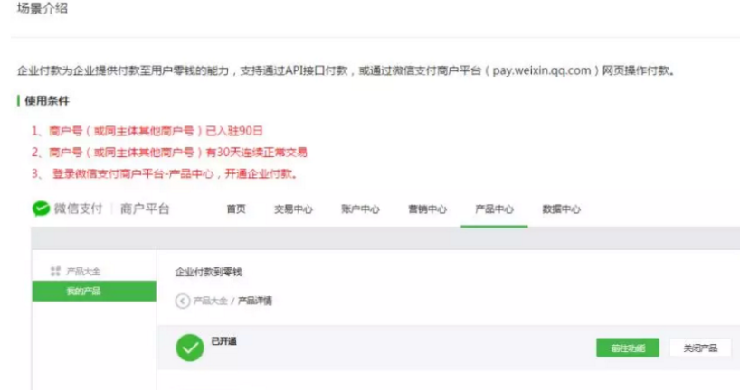
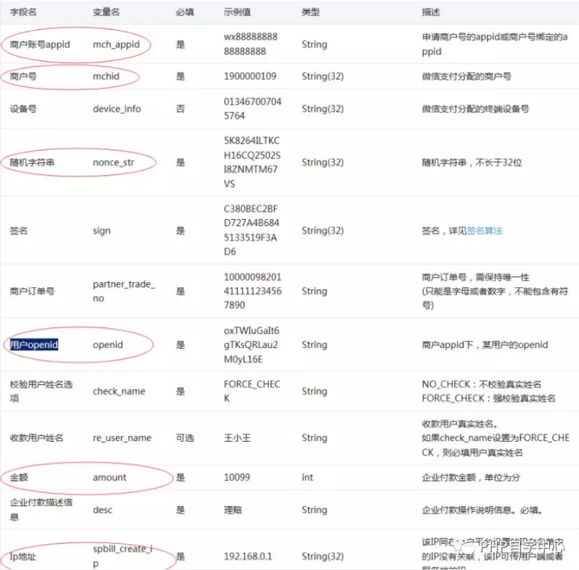

一 开通条件，就是首先要在微信平台设置好。

以下微信文档里有的，我这里大概掠几项比较重要的。
付款资金
企业付款到零钱资金使用商户号余额资金。
根据商户号的账户开通情况，实际出款账户有做区别：
◆ 默认情况下，企业付款到零钱使用商户号基本户（或余额账户）余额。如商户号已开通运营账户，则企业付款到零钱使用运营账户内的资金。
◆ 基本户（或上述其他出款账户）的资金来源，可能是交易结算款项（仅基本户），或给账户充值的资金。当出款账户余额不足时，付款将因余额不足而付款失败。
付款规则
付款方式
◆ 支持API接口或网页操作，付款至目标用户。
收款用户身份指定
◆ 通过APPID+OPENID指定收款用户。
◆ APPID需要为申请商户号时的APPID，或者与商户号有绑定关系。
◆ OPENID的获取方式，可参照：https://mp.weixin.qq.com/wiki?t=resource/res_main&id=mp1421140839
付款额度
◆ 不支持给非实名用户打款
◆ 给同一个实名用户付款，单笔单日限额2W/2W
◆ 一个商户同一日付款总额限额100W
注意：以上规则中的限额2w、100w由于计算规则与风控策略的关系，不是完全精确值，金额仅做参考，请不要依赖此金额做系统处理，应以接口实际返回和查询结果为准，请知晓。
收款用户身份校验
◆ 针对付款的目标用户，提供可校验真实姓名的功能
查询付款情况
◆ 已付款的记录，企业可通过企业付款查询查看相应数据，或者查询商户号资金流水。
付款频次
◆ 默认每天最多可向同一个用户付款10次，可以在商户平台--API安全进行设置
其他注意事项
◆ 付款金额必须小于或等于商户当前可用余额的金额；
请求参数：
具体参看官方企业付款开发文档说明

PHP代码示例调用，这里是写在一个文件里，看每个方法就知道是干嘛用的咯。
<?php
//企业付款到微信零钱，PHP接口调用方法
define("APPID", "wx875439864"); //商户账号appid
define("MCHID", "190023450990"); // 商户号
define("SECRECT_KEY", "145535866885"); //支付密钥签名
define("IP", "120.178.12.52"); //IP
function createNoncestr($length =32)
{
$chars = "abcdefghijklmnopqrstuvwxyz0123456789";
$str ="";
for ( $i = 0; $i < $length; $i++ ) {
$str.= substr($chars, mt_rand(0, strlen($chars)-1), 1);
}
return $str;
}
function unicode() {
$str = uniqid(mt_rand(),1);
$str=sha1($str);
return md5($str);
}
function arraytoxml($data){
$str='<xml>';
foreach($data as $k=>$v) {
$str.='<'.$k.'>'.$v.'</'.$k.'>';
}
$str.='</xml>';
return $str;
}
function xmltoarray($xml) {
//禁止引用外部xml实体
libxml_disable_entity_loader(true);
$xmlstring = simplexml_load_string($xml, 'SimpleXMLElement', LIBXML_NOCDATA);
$val = json_decode(json_encode($xmlstring),true);
return $val;
}
function curl($param="",$url) {
$postUrl = $url;
$curlPost = $param;
$ch = curl_init(); //初始化curl
curl_setopt($ch, CURLOPT_URL,$postUrl); //抓取指定网页
curl_setopt($ch, CURLOPT_HEADER, 0); //设置header
curl_setopt($ch, CURLOPT_RETURNTRANSFER, 1); //要求结果为字符串且输出到屏幕上
curl_setopt($ch, CURLOPT_POST, 1); //post提交方式
curl_setopt($ch, CURLOPT_POSTFIELDS, $curlPost); // 增加 HTTP Header（头）里的字段
curl_setopt($ch, CURLOPT_SSL_VERIFYPEER, FALSE); // 终止从服务端进行验证
curl_setopt($ch, CURLOPT_SSL_VERIFYHOST, FALSE);
curl_setopt($ch,CURLOPT_SSLCERT,ROOT_PATH .'/wxpay/cacert/apiclient_cert.pem'); //这个是证书的位置绝对路径
curl_setopt($ch,CURLOPT_SSLKEY,ROOT_PATH .'/wxpay/cacert/apiclient_key.pem'); //这个也是证书的位置绝对路径
$data = curl_exec($ch); //运行curl
curl_close($ch);
return $data;
}
/*
$amount 发送的金额（分）目前发送金额不能少于1元
$re_openid, 发送人的 openid
$desc // 企业付款描述信息 (必填)
$check_name 收款用户姓名 (选填)
*/
function sendMoney($amount,$re_openid,$desc='测试',$check_name=''){
$total_amount = (100) * $amount;
$data=array(
'mch_appid'=>APPID,//商户账号appid
'mchid'=> MCHID,//商户号
'nonce_str'=>createNoncestr(),//随机字符串
'partner_trade_no'=> date('YmdHis').rand(1000, 9999),//商户订单号
'openid'=> $re_openid,//用户openid
'check_name'=>'NO_CHECK',//校验用户姓名选项,
're_user_name'=> $check_name,//收款用户姓名
'amount'=>$total_amount,//金额
'desc'=> $desc,//企业付款描述信息
'spbill_create_ip'=> IP,//Ip地址
);
$secrect_key=SECRECT_KEY;///这个就是个API密码。MD5 32位。
$data=array_filter($data);
ksort($data);
$str='';
foreach($data as $k=>$v) {
$str.=$k.'='.$v.'&';
}
$str.='key='.$secrect_key;
$data['sign']=md5($str);
$xml=arraytoxml($data);
$url='https://api.mch.weixin.qq.com/mmpaymkttransfers/promotion/transfers'; //调用接口
$res=curl($xml,$url);
$return=xmltoarray($res);
print_r($return);
//返回来的结果
// [return_code] => SUCCESS [return_msg] => Array ( ) [mch_appid] => wxd44b890e61f72c63 [mchid] => 1493475512 [nonce_str] => 616615516 [result_code] => SUCCESS [partner_trade_no] => 20186505080216815
// [payment_no] => 1000018361251805057502564679 [payment_time] => 2018-05-15 15:29:50
$responseObj = simplexml_load_string($res, 'SimpleXMLElement', LIBXML_NOCDATA);
echo $res= $responseObj->return_code; //SUCCESS 如果返回来SUCCESS,则发生成功，处理自己的逻辑
return $res;
}
?>三 调用方法 ：
直接在你写的方法里调用此方法就好了
sendMoney(1,'ewrwexe32423423423423423','xxxx测试');返回的结果，成功的话就直接print出来，失败的话也要抛出异常。如果你还是不懂，请查看之前分享过的这篇文章。
微信企业付款到个人零钱功能，很简单的就实现咯！
效果图如下
转自“php自学中心 - PHP微信商户支付企业付款到零钱功能”